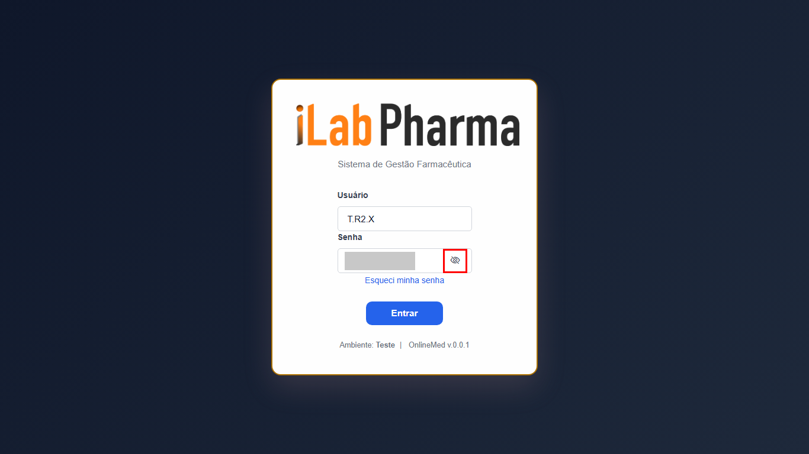
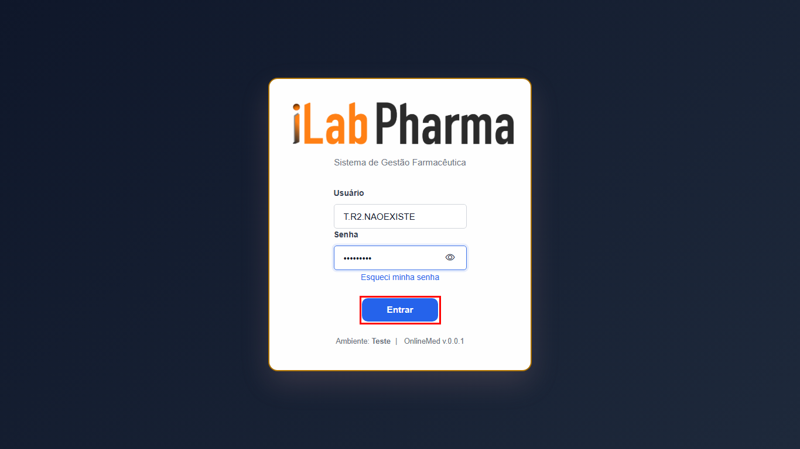
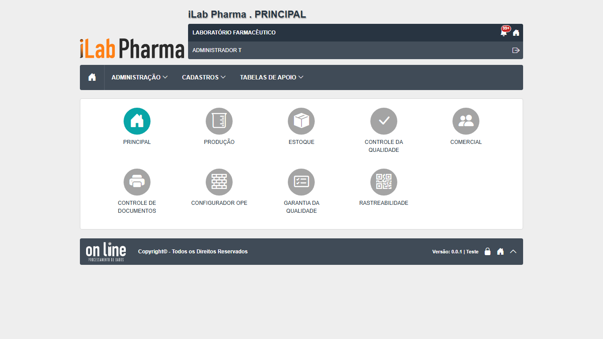
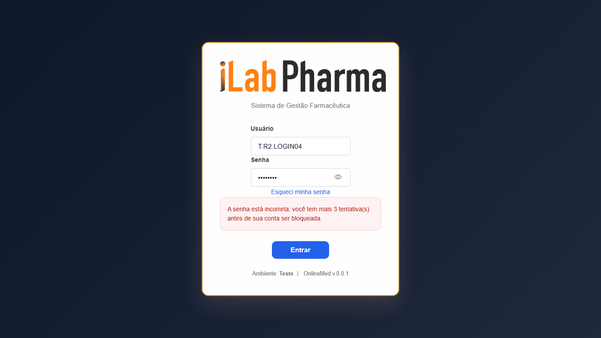
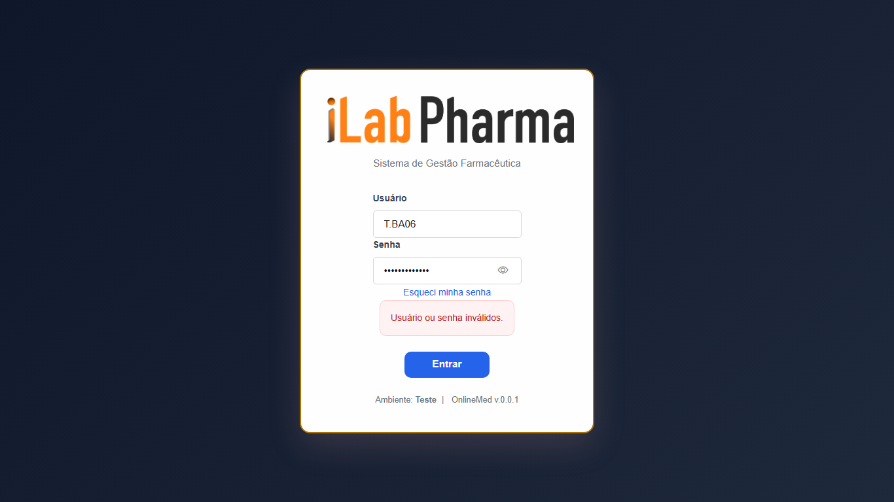
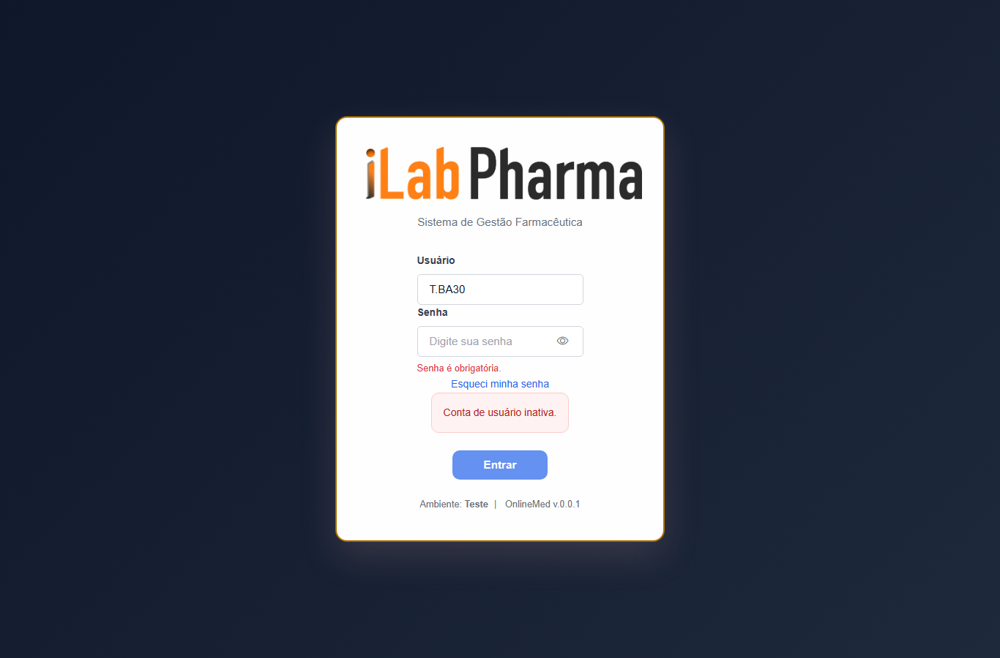
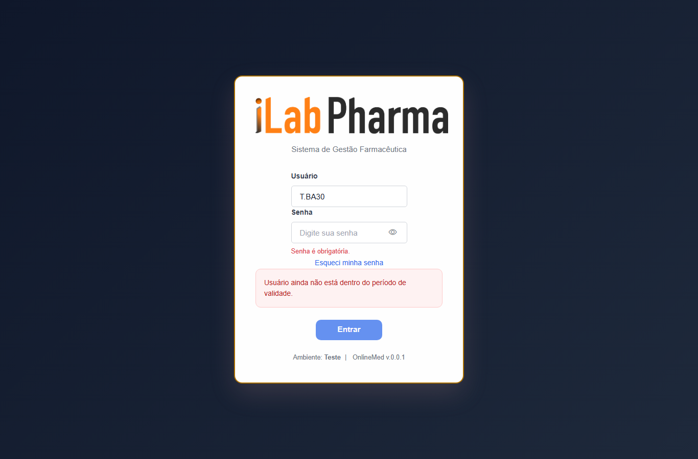
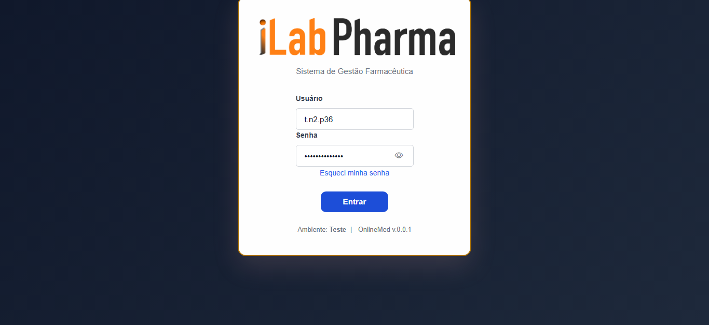
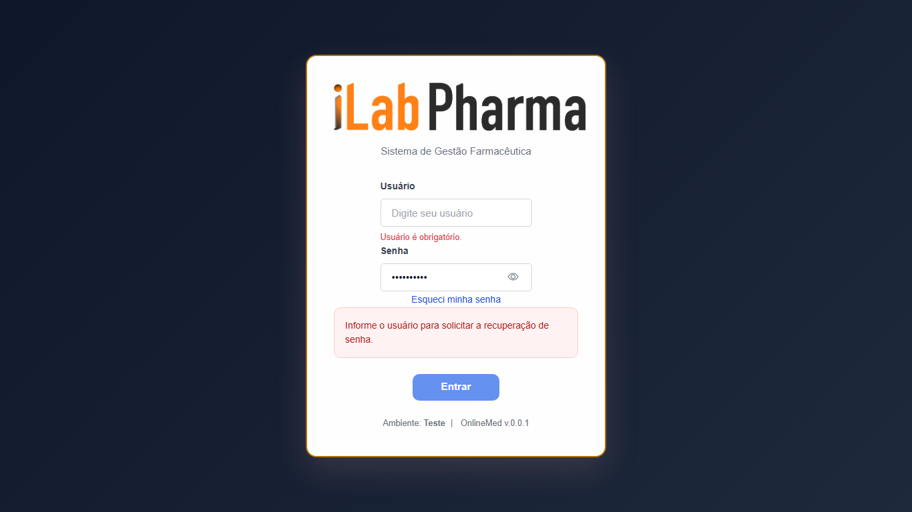

Menu: Acesso ao sistema · Situação do manual: Em ajuste (prints e conferência de 17/11/2026) · Fonte dos prints: versão nova.
Para que serve
É a porta de entrada do LabMedSys na versão nova ("iLab Pharma . PRINCIPAL"). Toda pessoa informa Usuário e Senha; o sistema confere os dois, aplica as regras de situação da conta, validade e bloqueio, e abre a tela inicial (ou a Troca de senha, quando a senha é provisória ou foi redefinida). Como o Principal faz o login central, os demais módulos recebem o usuário já identificado (do legado; a confirmar na versão nova: não foi possível conferir nesta tela em 17/11/2026).
Antes de começar (o que precisa existir)
| O que precisa existir | Para quê | Onde se cadastra |
|---|---|---|
| Profissional ativo ligado à conta | Profissional inativo é recusado ("Usuário inativo.") | Administração > Profissional |
| Conta de usuário ativa e dentro do período de validade | Conta inativa ou fora do período é recusada | Administração > Conta usuário |
| Perfil ativo, com ao menos uma função, ligado à conta | Sem função, a entrada é recusada ("Usuário sem módulos de acesso."); perfil inativo também ("Usuário sem perfil de acesso.") | Administração > Perfil e Conta usuário |
Passo a passo
- Abra o endereço da versão nova no navegador. A tela mostra o logotipo iLab Pharma, "Sistema de Gestão Farmacêutica", os campos Usuário e Senha (com o ícone de olho para mostrar a senha), o atalho Esqueci minha senha, o botão Entrar e, no rodapé, "Ambiente: Teste | OnlineMed v.0.0.1". Durante a chamada ao servidor o botão mostra Autenticando.... Com os dois campos vazios, o botão Entrar fica desabilitado (mais claro) e nada é enviado ao servidor.
A imagem mostra o cartão de login com os campos vazios e o botão Entrar desabilitado.
- Digite o Usuário e a Senha. Não há mensagem de "campo obrigatório" ao abrir a tela: o aviso da falta de preenchimento é o próprio botão desabilitado. Se um campo é digitado e depois apagado, aparece a linha vermelha "Senha é obrigatória." abaixo do campo (e "Usuário é obrigatório." quando é o Usuário que fica vazio). Com os campos intocados não há mensagem.
A imagem mostra a linha vermelha "Senha é obrigatória." sob o campo Senha depois de apagá-la.
O ícone de olho mostra a senha em texto e esconde de novo ao clicar outra vez.

A imagem mostra o ícone de olho marcado; a senha digitada fica coberta.
A tecla Enter no campo Senha equivale a clicar em Entrar.

A imagem mostra os dois campos preenchidos e o botão Entrar marcado.
- Clique em Entrar. - Entrada aceita: abre a tela inicial. Se a senha é provisória (primeiro acesso) ou foi redefinida pelo administrador, abre a tela Troca de senha no lugar (ver o manual daquela tela). O Usuário pode ser digitado em minúsculas ou maiúsculas e com espaços nas pontas: o sistema ignora (testado com senha provisória, que abriu a Alterar senha).
A imagem mostra a tela Alterar senha, aberta depois de uma entrada com senha provisória.

A imagem mostra a tela inicial depois de uma entrada aceita. - Entrada recusada: aparece uma caixa de aviso vermelha acima do botão Entrar, com a mensagem do motivo. Atenção: a mensagem some sozinha em cerca de 3 segundos (medido em 17/11/2026: 3,0 a 3,1 s; DV-PRI-N-003 e DV-PRI-N-055); leia logo ou repita a tentativa com atenção ao contador.
- Senha errada. A mensagem informa quantas tentativas restam antes do bloqueio. Numa conta sem erros anteriores, o 1º erro diz "mais 3", o 2º "mais 2", o 3º "mais 1" e o 4º "mais 0" (a conta ainda está ativa; candidato a defeito DN-R2A-01). O bloqueio vem no 5º erro.

A imagem mostra o 1º erro: "mais 3 tentativa(s)".
A imagem mostra o 2º erro: "mais 2 tentativa(s)".
A imagem mostra o 3º erro: "mais 1 tentativa(s)".
A imagem mostra o 4º erro: "mais 0 tentativa(s)", com a conta ainda ativa.
A imagem mostra o 5º erro: "Usuário bloqueado devido ao limite de tentativas de acesso."
A imagem mostra que, com a conta bloqueada, até a senha certa recebe a mesma mensagem de bloqueio.
Usuário que não existe recebe a mensagem genérica:
A imagem mostra a caixa "Usuário ou senha inválidos.".
- Conta ou usuário sem direito de entrar. Cada situação tem a sua mensagem:

Conta inativa com senha errada (T.BA06): a caixa diz "Usuário ou senha inválidos." e não distingue de usuário inexistente.
Profissional inativo com a senha certa: a caixa diz "Usuário inativo.".
Com a senha errada a mensagem é a mesma, "Usuário inativo.": o sistema revela o estado do cadastro sem conferir a senha (candidato a defeito DN-R2A-02).

Conta inativa com a senha certa (T.BA30): a caixa diz "Conta de usuário inativa.". A linha "Senha é obrigatória." aparece porque o campo foi esvaziado para a captura. (Print da rodada anterior, ainda válido: não foi refeito em 17/11/2026.)
Validade da conta vencida, senha certa: "Usuário fora do período de validade.".

Validade que ainda não começou, senha certa: "Usuário ainda não está dentro do período de validade.".
Conta ligada a um perfil sem nenhuma função (T.BA08): "Usuário sem módulos de acesso." (aparece cerca de 3 segundos).
- Perfil inativo. Se o único perfil da conta foi inativado, o servidor recusa o login ("Usuário sem perfil de acesso."), mas a tela volta ao estado inicial sem mostrar mensagem (DV-PRI-N-062).

A imagem mostra o login da conta de teste t.n2.p36 com a senha preenchida e nenhuma caixa de mensagem, mesmo com o servidor tendo recusado a entrada.
-
Bloqueio por tentativas. O limite é de 5 erros seguidos: o quinto bloqueia a conta ("Usuário bloqueado devido ao limite de tentativas de acesso.") e toda tentativa seguinte recebe a mesma mensagem, mesmo com a senha certa (imagens do passo 4). O contador volta a zero depois de um acerto (conferido no teste de 16/11/2026). Quem desbloqueia é o administrador, pelo Reset de senha da tela Conta usuário (a conta passa a ter uma senha provisória nova).
-
Esqueci minha senha. O atalho abre o pedido de recuperação, que pede só o usuário. Sem usuário digitado, a tela diz "Informe o usuário para solicitar a recuperação de senha.".

A imagem mostra a caixa "Informe o usuário para solicitar a recuperação de senha." e, sob o campo, "Usuário é obrigatório.".
Com um usuário que não existe, o sistema responde com uma caixa verde neutra: "Se o usuário informado estiver apto para recuperação, as instruções serão enviadas ao e-mail cadastrado."
A imagem mostra a caixa verde neutra. O pedido com um usuário real não foi feito (poderia disparar e-mail); o que ele envia e para onde é Ponto para validar.
Limite por tempo. Depois de cerca de 15 tentativas em poucos minutos (mesmo com contas diferentes, a partir do mesmo lugar), o sistema barra até quem tem a senha certa, com "Muitas tentativas em um curto período. Aguarde e tente novamente."; passou depois de alguns minutos.
A imagem mostra a mensagem do limite por tempo.
- Sessão. Depois de logado, a sessão expira por inatividade (o acesso vale 600 segundos; num teste anterior, com 11,5 minutos parado, a tela voltou sozinha ao login; não foi repetido em 17/11/2026). Digitar o endereço de qualquer tela sem estar logado também leva ao login.
Ícones e botões da lista
Esta tela não tem lista. Os elementos clicáveis estão em "Botões e ações".
Botões e ações
| Botão ou ação | Quando aparece | O que faz | Para onde leva |
|---|---|---|---|
| Entrar | Sempre; desabilitado com campos vazios; mostra "Autenticando..." durante a chamada | Envia usuário e senha ao servidor | Tela inicial, Troca de senha ou mensagem de recusa |
| Ícone de olho | No campo Senha | Mostra ou esconde a senha digitada | Fica na tela |
| Esqueci minha senha | Sempre | Abre o pedido de recuperação (pede o usuário) | Pedido de recuperação (Ponto para validar o destino) |
| Tecla Enter | No campo Senha | Equivale a Entrar (conferido em 17/11/2026) | Tela inicial, Troca de senha ou mensagem de recusa |
Mensagens do sistema
| Mensagem exata | Quando aparece |
|---|---|
| Usuário ou senha inválidos. | Usuário inexistente, ou conta inativa com senha errada |
| A senha está incorreta, você tem mais N tentativa(s) antes de sua conta ser bloqueada. | Senha errada (1º ao 4º erro; N de 3 a 0) |
| Usuário bloqueado devido ao limite de tentativas de acesso. | 5º erro e tentativas seguintes |
| Muitas tentativas em um curto período. Aguarde e tente novamente. | Limite por tempo |
| Usuário inativo. | Profissional inativo (com senha certa ou errada) |
| Conta de usuário inativa. | Conta inativa, senha certa |
| Usuário fora do período de validade. | Validade encerrada |
| Usuário ainda não está dentro do período de validade. | Validade ainda não iniciada |
| Usuário sem módulos de acesso. | Perfil sem funções |
| Usuário sem perfil de acesso. | Perfil inativo (só o servidor responde) |
| Senha é obrigatória. | Linha sob o campo Senha quando ele é apagado |
| Usuário é obrigatório. | Linha sob o campo Usuário quando ele é apagado, ou ao usar "Esqueci minha senha" sem usuário |
| Informe o usuário para solicitar a recuperação de senha. | "Esqueci minha senha" sem usuário |
| Se o usuário informado estiver apto para recuperação, as instruções serão enviadas ao e-mail cadastrado. | "Esqueci minha senha" com usuário inexistente (caixa verde, resposta neutra) |